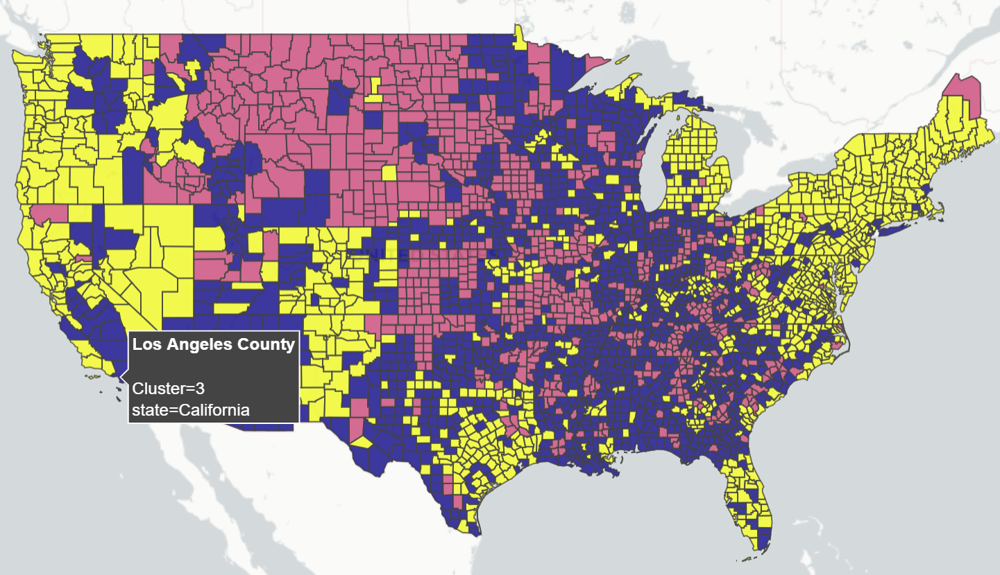
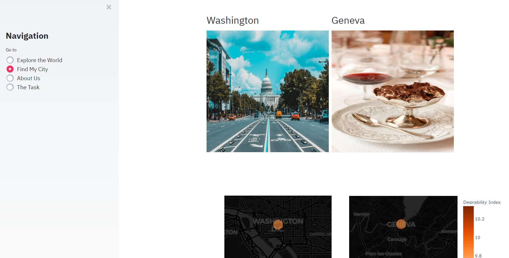
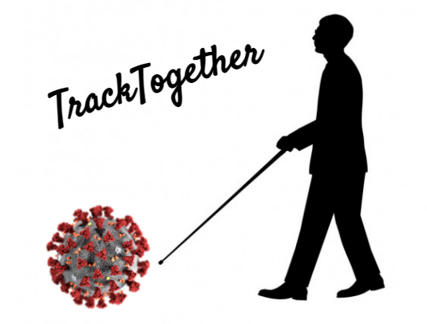
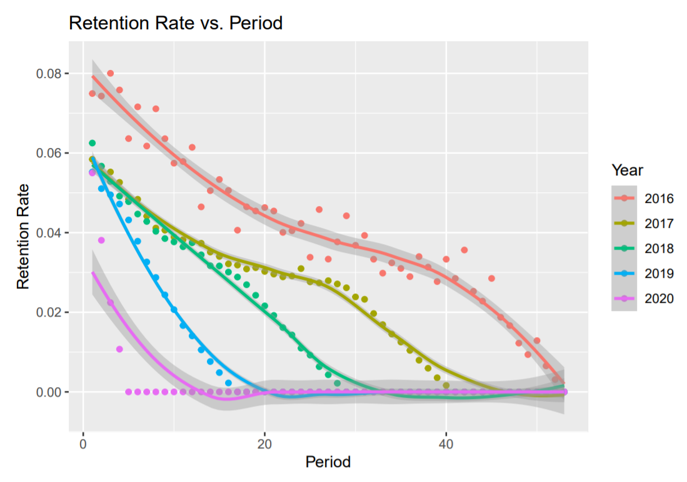

This project looks at COVID-19 metrics on a county-by-county level in order to gauge what pockets of the United States are at the highest risk.
All data is recorded and visualized real-time by querying from the New York Times' GitHub repository.
Furthermore, I also perform a novel clustering analysis of each and every county in the United States according to some user-specified metrics.
(Click "Full Story" to access the live web application)

This project was made with my friends as part of the Texas A&M University 2020 Datathon.
Our final product was a heroku web application to gauge the best city/home based on user-specified metrics and sklearn's davies_bouldin_score attribute along with KMeans clustering.
After gauging the otpimal "home(s)" for a user, we visualized these locations and used web-scraping to display images of a user's ideal city.
We won 3rd place in our category. (Click "Full Story" to access the live web application)
I wrote a comprehensive article for DataRes at UCLA that looks at California wildfire growth over the last few years, and the role climate change has played in exacerbating the current wildfire crisis.
What amazed me while writing this article was how a select few number of counties in California account for so much of the annual wildfire destruction.
All visualizations were created from scratch using CAL FIRE data/APIs. (Click "Full Story" to see the article)

In this project my team built a virtual assistant to convey COVID-19 information audibly and over SMS - specifically for those with visual impairments.
We noticed a gap in catering for those with visual impairments and addressed this issue with the tremendous capabilities of speech recognition.
We essentially create a virtual assistant that can perform a variety of tasks. These tasks range from answering questions about the virus using an AI-powered chatbot to enabling quick-and-easy
dissemination of COVID-19 county-specific updates without having to touch your phone (Click "Full Story" to see the project)

The aim of this datathon was to gather eCommerce insights and leverage analytics to diagnose business strengths in terms of customer behaviors.
My team was charged with analyzing visualizations that projected customer lifetime value (LTV) over 5 year and 10 year periods.
By analyzing specific quantiles of our subset, we came to the conclusion that our client (the eCommerce company in question) should target higher spenders and
incentivize to those customers who fall in the top 60% of high-spenders. We placed 2nd place overall.
In an effor to better understand how powerful search engines such as Google function, I tried to build PageRank algorithm (famously pioneered by Larry Page and Sergey brin) from scratch.
I Walking to Class" is my first project for the Stack, UCLA Daily Bruin, which is the biggest social media club ran by students. This project helps students explore new routes from the dorms to campus and provide various statistics about each route